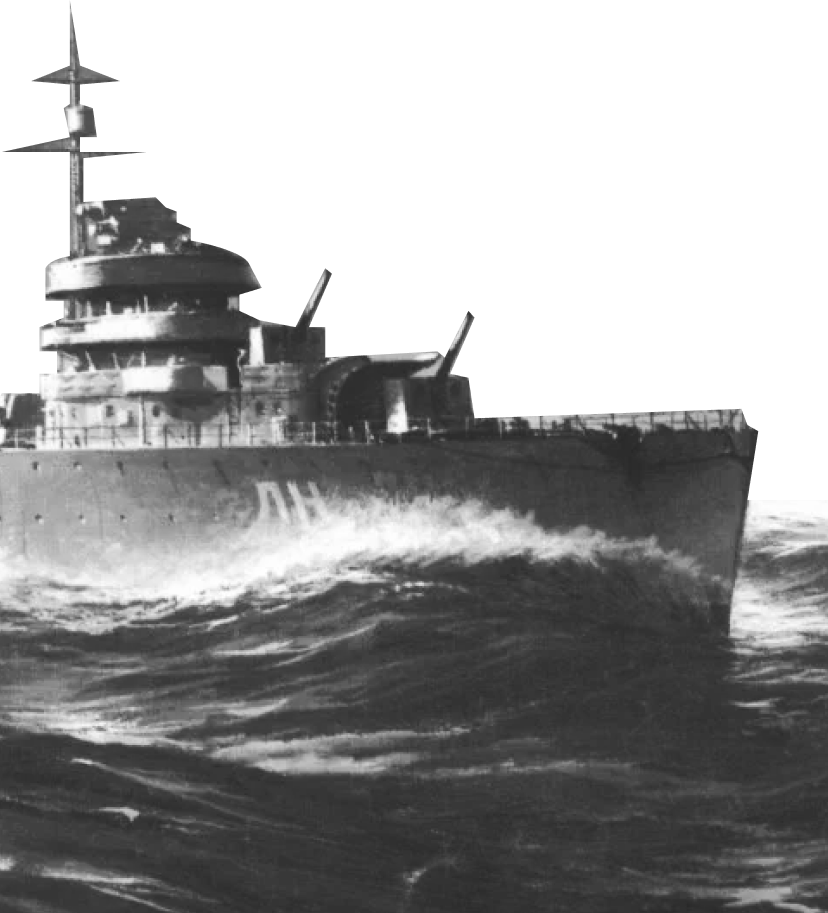

02

Советские годы и современная Россия
Вместе с усложнением военного дела изменилась и профильная подготовка военно-морских врачей.
В Ленинграде открыта профильная академия
1940
86,4%
раненых95,9%
больных вернулись в строй
В годы Великой Отечественной войны благодаря самоотверженным медикам в строй вернулись 86,4% раненых и
95,9% больных. Военно-морской флот не знал эпидемий, которые, как правило, сопровождали войны прошлого.
1941-1945
479
кораблей и судов10
подводных лодок640
тыс. человек
В эвакуации раненых и больных водным санитарным транспортом участвовали 479 кораблей и судов, в том
числе 10 подводных лодок. Их силами были перевезены около 640 тыс. человек из соединений флота и армии.
1941-1945
Открыт факультет для подготовки врачей для Военно-морского флота
1956
На воду была спущена первая советская атомная подводная лодка «Ленинский комсомол». Что поставило перед
военно-морской медициной новые вопросы.
1957